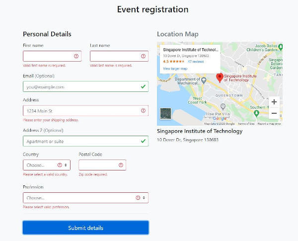

CS2005: Lab 4
Bootstrap
A CSS framework
Objective
Learn how CSS frameworks make it far faster to code up frontend prototypes that are responsive across multiple form factors (desktop, tablet, mobile).
CSS frameworks also have many helper interface classes that make styling and design easier for prototyping.
Why Bootstrap?
- Build responsive websites quickly with Bootstraps 12-grid system.
- Lots of prebuilt CSS components make prototyping quick.
- Easily include Bootstrap icons. Comes with themes.
Adding Bootstrap (and JQuery)
Easiest is to import via CDN. Refer to Bootstrap docs here.
You have to install the CSS, then JS packages. Depending on what Bootstrap functions you require, install the JS packages. Or install everything!
Or, if you want to modify the base JS package, install via npm.
The 12-grid system
Bootstrap uses a custom 12-grid system for positioning code.
Content block 1...
Content block 2...
Try out this example.
Templates
Need template ideas and example code?
Take a look at the whole bunch of templates from the website.
From simple forms to dashboards to one page layouts, there is enough for you to choose from.
Assignment
Lab 4: responsive event form
Assignment Lab 4: Setup
To be completed by 19-10-2020(Mon) 12pm
- On GitHub Pages, create a repo CSC2005Lab4
- This repo link will be of the format https://<username>.github.io/CSC2005Lab4/
- Create a basic index.html file for your final solution.
Assignment Lab 4: Problem
- You have been asked by your boss to design a nice simple responsive web form for a workshop event registration.
- It needs to be mobile first, but best if it also looks nice for tablet / desktop.
- Some key fields for attendees to submit: Name, phone number, email address, address, profession.
- Hint: There may be a bootstrap template example you can easily use as a base to work with.
Assignment Lab 4: Extra Challenges
- Do some frontend validation for fields like emails, etc.
- Embed a google map and add mock event location details.
Assignment Lab 4: Screenshots
Assignment Lab 4: Comments
- Grading will be on whether the form is responsive or not.
- You can use Bootstrap, or any other framework, or even write your own responsive design.
- This is a frontend challenge only, and there is no expectation for the interface to connect to any backend server. (i.e. POST calls to submit data to an API)
Questions?
Chi-Loong | V/R